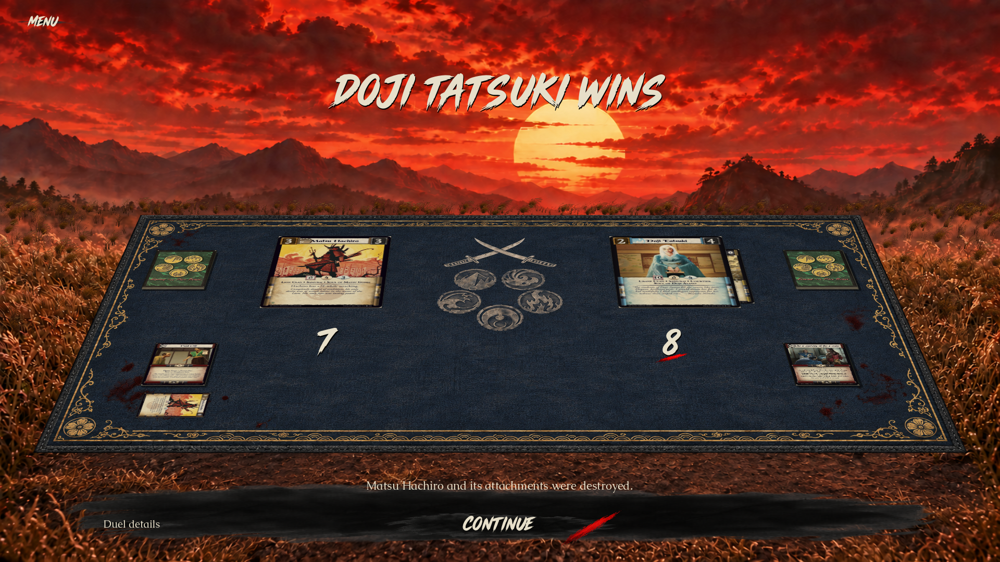
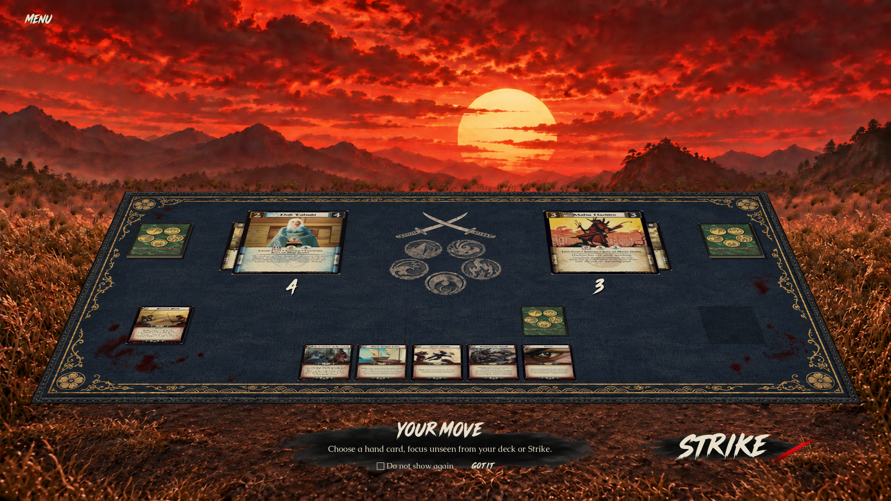
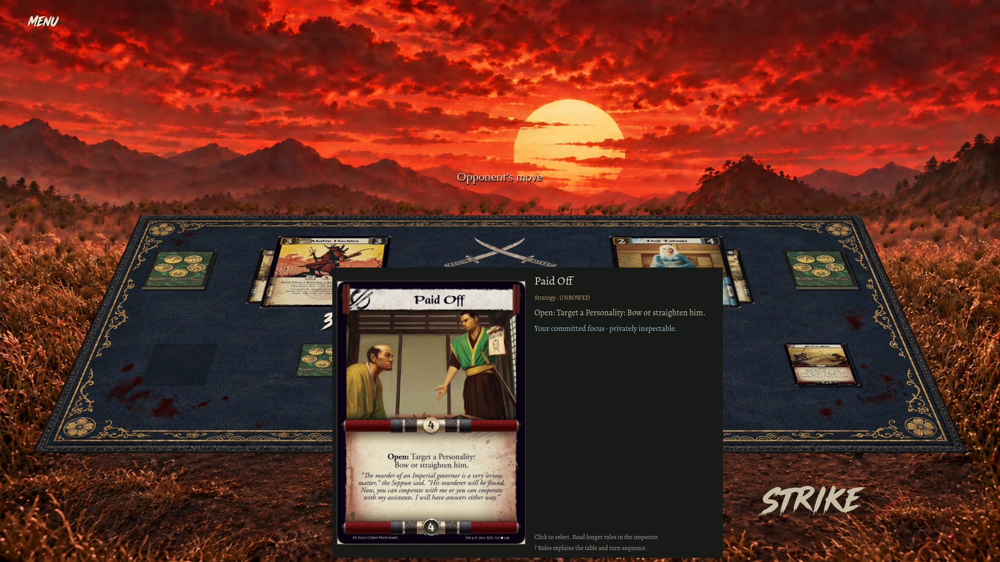
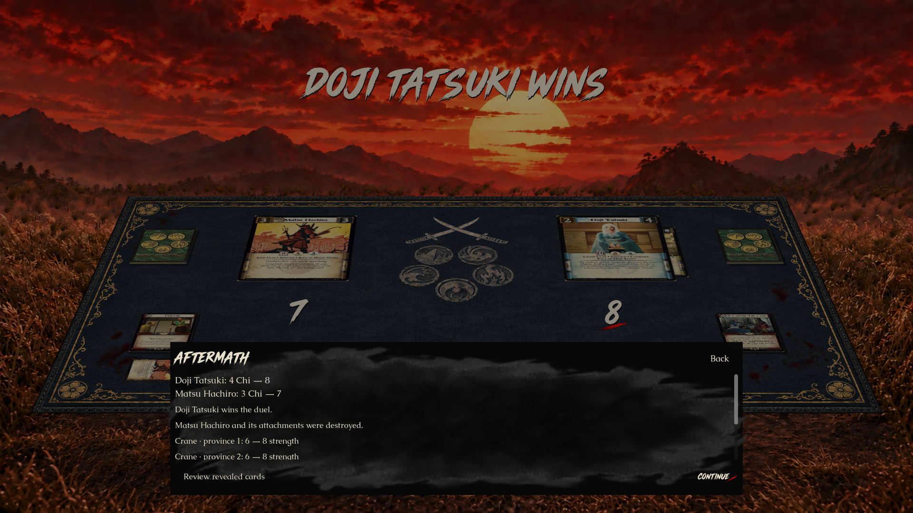
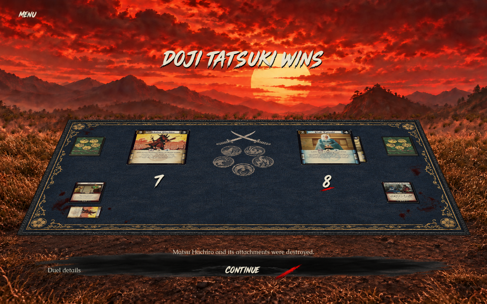
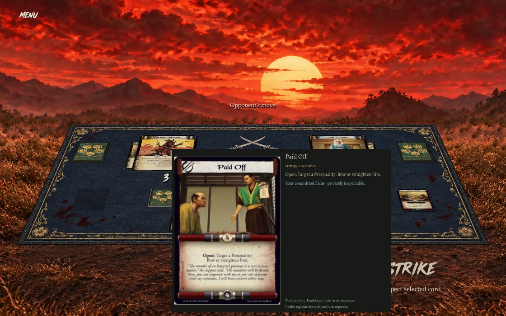
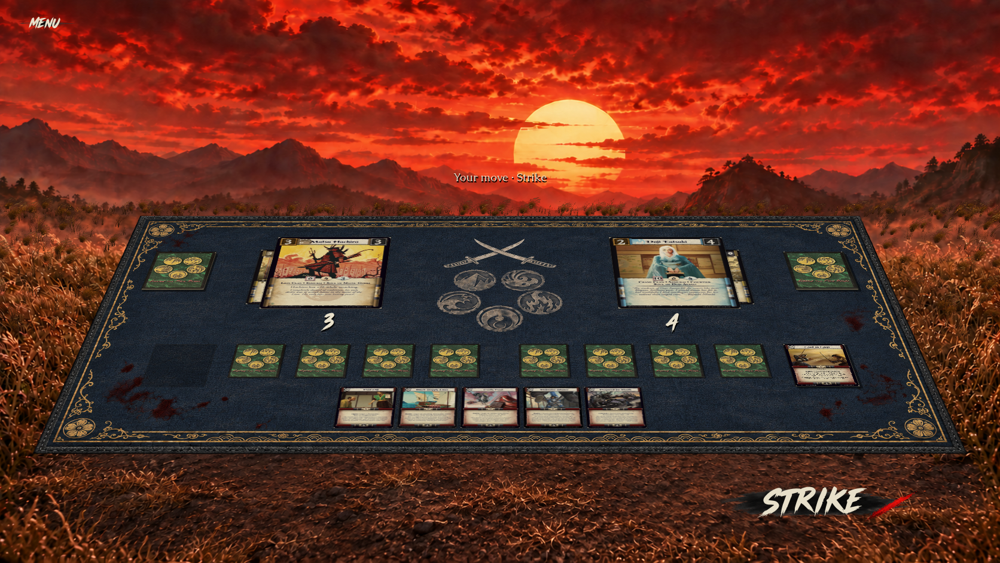
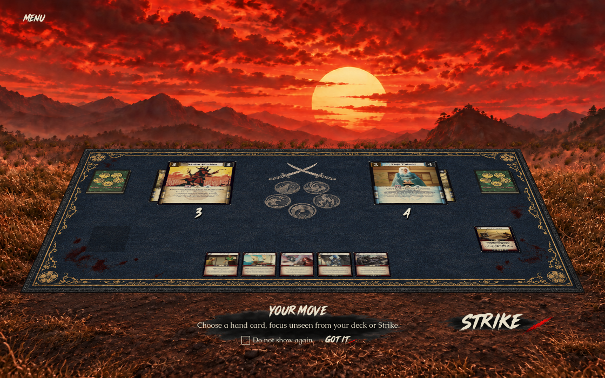
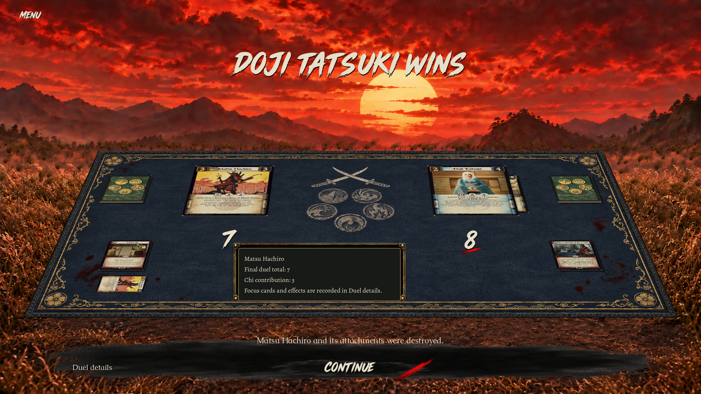

Approved A composition with the user's override: Musashi Brush numerals, no coins, and the main game's CardPreview. Native Mac captures. Real card faces and scores differ from illustrative concept art. The mat is imagegen-derived; no exact pixel-equivalence claim.









Exact probe outcomes and assertions: validation.json. Native images were inspected directly; this HTML is a comparison artifact, not a browser-render validation claim.